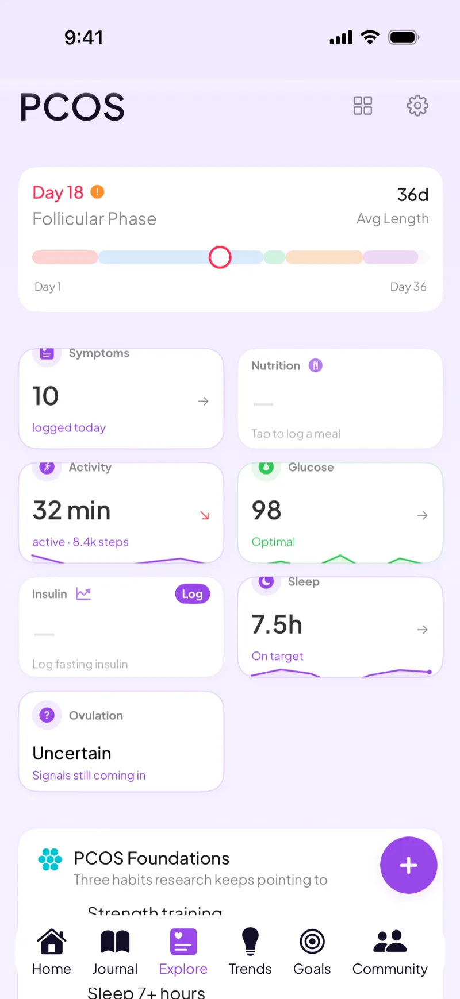

Predictions that learn from your own irregular history instead of a 28-day template
If your cycles run 24 days one month and 45 the next, a template can't keep up. Veya learns from the cycles you've actually logged, shows a range instead of one confident date, and keeps tracking through late or missing periods.
Download VeyaNot on iPhone? Use the web app in any browser.

On a computer?
Scan to download on your phone.

Built for irregular cycles
It learns from your history
There's no regularity setting to pick. Veya reads the cycles you've logged and adjusts as you add more, instead of assuming a standard 28-day cycle.
A range instead of a single date
Predictions show up as a window with a most likely day, so a cycle that runs long doesn't make the whole calendar wrong.
Gentle when it guesses wrong
When your period doesn't show up on the predicted day, Veya uses soft catch-up wording and keeps tracking instead of making you feel like you broke something.
Patterns that don't need a regular calendar
Symptoms, mood, sleep, and habits are correlated by what you log, so the insights keep working when your cycle length doesn't.
Labs over time
Log labs like TSH, AMH, and progesterone and see them alongside your cycle history.
A record for your appointments
Export an organized record of your cycles, symptoms, and labs to bring to your care team.
See how it all connects
Irregular cycles are hard to read from dates alone. Veya keeps your cycle history next to your symptoms, mood, sleep, and nutrition, with wearable data flowing in automatically, and looks for patterns across all of it, like how a short night of sleep tends to line up with a harder day. For PCOS-specific tracking, see the PCOS tracker.
What you can log
Private by default
Cycle history is personal, and Veya treats it that way. Your data is encrypted and stored securely, and Veya doesn't run ads or sell your data. You can export or delete what you've logged at any time.
Frequently asked questions
Comparing options? See our irregular cycle app comparison.
Track a cycle that doesn't follow the calendar
Log today's symptoms or your last period, and let the predictions learn from there.
Download VeyaNot on iPhone? Use the web app in any browser.
Tracking for other conditions
PCOS tracking · Perimenopause tracking · IVF tracking · Cycle syncing · Cycle tracking with an IUD · Partner sharing · Mira and Inito import · All conditions